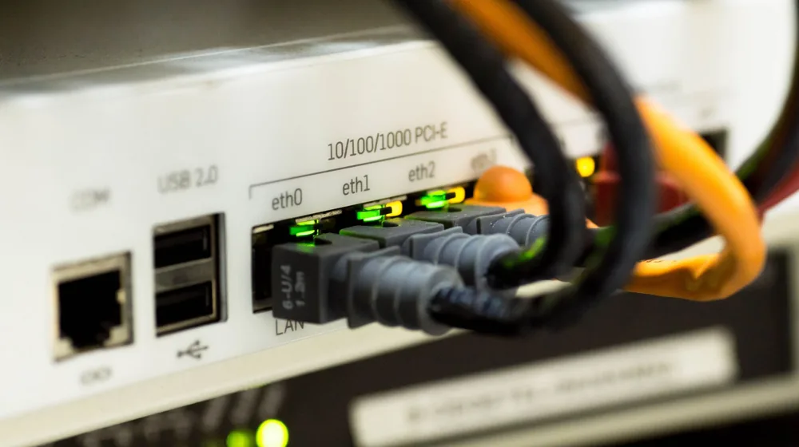

와이파이 속도 답답하세요? 딱 5가지로 해결하는 초간단 체크리스트
사진: Pixabay / Pexels (무료 이미지, 출처 표기)
느려진 와이파이, 가장 먼저 시도할 '이것'

와이파이 속도가 느려져 답답함을 느끼고 있다면, 가장 먼저 공유기 자체를 점검해야 합니다. 컴퓨터나 스마트폰처럼 공유기도 과부하가 걸리거나 오류가 발생할 수 있기 때문입니다. 2026년 08월 기준으로 가장 빠르고 확실한 초기 해결책은 바로 재부팅입니다.
공유기의 전원 플러그를 뽑은 후 약 10~20초 기다렸다가 다시 연결하세요. 이 과정에서 공유기 내부의 임시 데이터가 초기화되고 설정이 재정비되어 속도 저하 문제가 해결되는 경우가 많습니다. 또한, 공유기와 통신사 모뎀 사이의 LAN 케이블이 제대로 연결되어 있는지 확인하고, 가능하다면 다른 LAN 케이블로 교체하여 테스트해보는 것도 좋습니다.
공유기 위치와 주변 환경, 괜찮으신가요?
공유기의 물리적인 위치는 와이파이 속도와 안정성에 직접적인 영향을 미칩니다. 공유기는 전파를 쏴주는 장치이므로, 집 중앙이나 자주 사용하는 공간에 설치하는 것이 가장 좋습니다. 벽, 가구, 기둥 등 전파를 방해하는 장애물이 적은 곳에 두는 것이 중요합니다.
특히 금속 재질의 물체나 두꺼운 콘크리트 벽은 와이파이 신호를 크게 약화시킬 수 있습니다. 또한, 전자레인지, 무선 전화기, 블루투스 기기 등 2.4GHz 주파수를 사용하는 다른 전자기기들은 와이파이 신호와 간섭을 일으켜 속도 저하의 원인이 될 수 있으니, 공유기 주변에 이러한 기기들이 밀집해 있다면 거리를 두는 것이 좋습니다.
- 공유기 최적 배치 팁:
- 집 중앙 또는 가장 자주 사용하는 공간에 배치
- 지면보다 높은 곳(예: 책장 위)에 설치하여 전파 확산 유리하게
- 벽, 금속 물체, 두꺼운 유리 등 장애물 최소화
- 전자레인지, 무선 전화기 등 2.4GHz 기기와 이격
와이파이 채널 설정 최적화로 간섭 줄이기
주변에 와이파이 공유기가 많거나, 같은 채널을 사용하는 기기가 많으면 전파 간섭으로 인해 속도가 느려질 수 있습니다. 공유기는 여러 채널 중 하나를 사용하여 데이터를 주고받는데, 혼잡한 채널을 사용하면 데이터 전송에 방해가 생깁니다. 이럴 때는 공유기 설정에서 와이파이 채널을 변경해주는 것이 도움이 됩니다.
대부분의 공유기는 2.4GHz와 5GHz 두 가지 주파수 대역을 지원합니다. 2.4GHz는 넓은 범위와 벽 투과율이 좋지만 속도가 느리고 간섭에 취약하며, 5GHz는 속도가 빠르지만 커버리지가 좁고 장애물에 약합니다. 사용 환경에 맞춰 적절한 대역을 선택하고, 공유기 관리자 페이지(대부분 192.168.0.1 또는 192.168.1.1로 접속)에서 Wi-Fi 채널을 확인하고 변경할 수 있습니다. 주변 와이파이 채널 분석 앱(예: WiFi Analyzer)을 활용하면 비어있는 채널을 쉽게 찾을 수 있습니다.
통신사 점검 및 공유기 상태 확인은 필수
위 방법들을 시도해도 속도 개선이 없다면, 통신사(ISP) 문제일 가능성도 있습니다. 먼저 통신사 고객센터에 연락하여 현재 사용하고 있는 인터넷 회선에 문제가 없는지 확인을 요청하세요. 간혹 통신사 내부 네트워크 문제나 회선 불량으로 인해 속도 저하가 발생하기도 합니다.
또한, 사용 중인 공유기가 너무 오래된 모델이라면 최신 인터넷 환경에 맞춰 성능을 내지 못할 수 있습니다. 구형 공유기는 최신 와이파이 표준(예: Wi-Fi 6, 802.11ax)을 지원하지 않아 속도 한계가 명확합니다. 공유기 펌웨어(운영 소프트웨어)를 최신 버전으로 업데이트하는 것도 성능 개선에 도움이 됩니다. 공유기 제조사 웹사이트에서 최신 펌웨어를 다운로드하여 업데이트 지침에 따라 진행할 수 있습니다. (2026년 08월 기준, 공유기 펌웨어는 보안 및 성능 개선이 꾸준히 이루어지므로 주기적인 업데이트가 권장됩니다.)
그래도 해결되지 않는다면: 업그레이드 또는 전문가 도움
위의 모든 방법을 시도했음에도 와이파이 속도가 여전히 느리다면, 몇 가지 추가적인 고려 사항이 있습니다.
인터넷 환경은 계속 변화하므로, 정기적으로 자신의 와이파이 상태를 점검하고 필요시 장비 업그레이드를 고려하는 것이 쾌적한 인터넷 사용을 위한 좋은 방법입니다. 정확한 사항은 공식 홈페이지나 해당 기관에서 다시 확인하시길 권장합니다.
🔗 이 글도 함께 보면 좋아요: 생성형 AI, 무료 vs 유료? 핵심 차이점부터 현명한 선택 기준까지